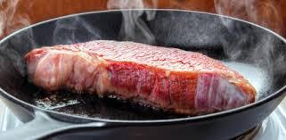

Entrecot con patatas
Receta de entrecot y patatas fritas.
Ingredientes
- 2 ó 3 patatas (200g.)
- entrecotde 300g
- Aceite de oliva
- Sal
Elaboración (Pasos)
- Calentar una sarten con un chorro de aceite
- Una vez caliente echar el entrecot a la sarten y espera

- Calentar aceite en una sartén.
- Añadir las patatas cortadas con la sal y freir al gusto .
- Servir en plato.